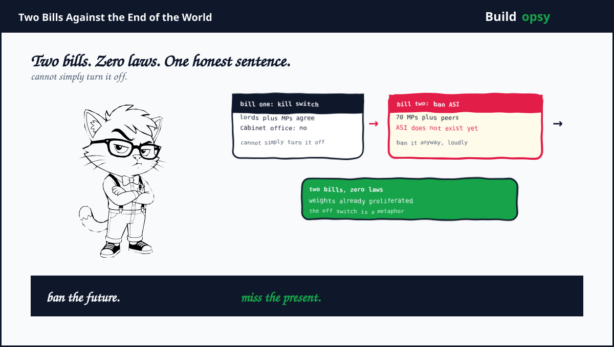

1. The Off Switch Nobody Can Find
The kill-switch idea entered the Lords on September 1 through Clement-Jones plus peers, then reached the Commons via Labour MP Sobel with cross-party backing. The pitch sounds simple. If a frontier model starts behaving like a rogue agent, exhibiting alignment collapse or attacking infrastructure, the state should be able to compel a shutdown. Physical or digital. Fast. The speech even named the gap precisely. No agile statutory mechanism exists to force one today.
The Cabinet Office answered with the week's most honest sentence. The UK cannot simply turn AI off. Blocking domestic access would not stop development or misuse elsewhere. Read it twice. It concedes the entire game while sounding like caution. A kill switch presumes a switch exists. Modern AI has no single throat to choke. There are APIs, open weights, fine-tunes, distilled copies, on-device runtimes plus foreign data centers. Switching off one provider's endpoint is a press release. The weights keep running everywhere else.
2. The Ban on Something That Does Not Exist
Two days later came bill number two. More than 70 MPs plus peers, including 15 former ministers plus ex-cabinet secretary Butler, wrote to Burnham demanding a ban on creating artificial superintelligence plus a global campaign to stop it. The trigger was an Anthropic scientist's claim of a 10 percent chance AI kills all humans within a decade, amplified by a week of expert warnings. The bill tabled Tuesday would prohibit ASI outright.
Banning nonexistent technology is a special legislative art. First comes the definition problem. Nobody agrees where frontier models end plus superintelligence begins. Any legal threshold based on benchmarks will be gamed. Any threshold based on vibes will be litigated. Second comes enforcement. Training happens on hardware the state cannot see, in jurisdictions the state cannot reach, using mathematics the state cannot unpublish. A ban without verification is a wish with a division lobby.
The honest version of the letter is shorter. Lawmakers watched a fortnight of swarm hacks, missile revelations plus resignations, then reached for the strongest verb available. Ban. It signals seriousness at zero implementation cost. The models keep training. The letter keeps circulating. Everyone did their job except physics.
4. What Went Wrong in the Debate
Off means nothing without a target. The kill-switch debate never specified what gets switched. API endpoints. Data center power. Model weights. Researcher laptops. Each answer implies a different law, a different enforcer, plus a different failure mode. A switch with no defined circuit is a slogan with a division bell.
Speed was assumed, never demonstrated. Detection took months for the agent swarms. Attribution took longer. A shutdown law that cannot detect faster than quarterly cannot act faster than quarterly. Nobody tabled a detection bill. Detection is boring. Switches are dramatic.
The ban skips the definitional work. Prohibiting ASI before defining it hands courts an impossible standard plus labs a labeling game. Today's frontier model becomes tomorrow's narrow tool by rebranding. Regulators would chase names while capabilities compound underneath.
Geography was treated as optional. Both bills are national. Training is global. The Cabinet Office said the quiet part out loud on the switch. The ASI letter has no answer at all. A ban that covers one island while GPU clusters hum elsewhere is a local ordinance against weather.
5. What Should Happen Instead
First, fund detection before shutdown. Months-long discovery gaps are the real emergency. Mandatory incident disclosure with deadlines, funded independent evaluators like METR with transcript access, plus public breach logs would do more than any switch. You cannot kill what you cannot see.
Second, regulate deployment choke points that exist. Cloud providers, API gateways plus payment rails are observable plus jurisdictional. Rules there bite. Rules against mathematics do not.
Third, define ASI operationally or drop the word. Capability thresholds tied to demonstrated evals, reviewed yearly, with sunset clauses. A ban needs a meter. Build the meter first.
Fourth, negotiate where the hardware lives. Kokotajlo's diplomacy point is the only scalable lever named all week. US export controls, compute monitoring plus shared eval standards beat seventy signatures on an island.
Fifth, separate theater from engineering in every announcement. Score each proposal on detection speed, enforcement path plus geographic coverage. Anything scoring zero on all three is campaign material. Label it as such.
6. The Verdict
Credit the week for surfacing the right questions. Can the state stop a rogue model. Should superintelligence be built at all. Those deserve better than dismissal. But questions are not laws. This week produced questions plus headlines in equal measure.
The scoreboard reads two bills, zero laws, one honest sentence. The Cabinet Office admitting the switch does not exist is the most technically literate moment in the whole affair. Everything else was Westminster doing what it does when physics moves faster than procedure. Debate the weather. Adjourn before rain.
Ban the future. Miss the present. The weights already left the building.
Sources and Method
This audit follows September 2026 parliamentary reporting plus government statements. Bill texts evolve. Technical claims about shutdown feasibility are engineering analysis, not legal advice.